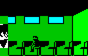
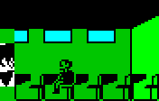

In demo mode, ERIC bases his every move on where little boy no. 11 is and what
he's doing (see the routine at 62938). This important role means that little
boy no. 11 is in all of ERIC's classes (if he weren't, ERIC would be guilty of
truancy in demo mode). In fact, little boy no. 11 is the only character besides
EINSTEIN who joins ERIC for every class.
One consequence of this devotion to little boy no. 11 is that ERIC can
sometimes be seen going from one end of a staircase to the other three times in
succession, as if unsure of where to go. This happens because when little boy
no. 11 starts climbing a staircase, ERIC will run to the top and get there
before him, then run down to the bottom looking for him, and finally run to the
top again to catch up with him.
Skool tunes
The tune that plays just before a game (or demo mode) starts, and also when
ERIC goes up a year, is
Girls
and Boys Come Out To Play. The tune that plays when ERIC makes the final
shield flash, and when he opens the safe, is
Au clair de la
lune.
Alternative differences
The version of Skool Daze that was released by Alternative Software Ltd in 1987
contains three visible differences from the version released by Microsphere in
1984.
(1) MR WITHIT's blackboard message at 59392 reads 'WHY IT RAINS IN
MANCHESTER' (which doesn't fit on the blackboard) instead of 'MANCHESTER
MONSOONS'.
(2) The font graphic for the '/' (slash) character is slightly broken:
instead of
(3) In the stampede playtimes (lessons 252 and 253), the stampede
leader (little boy no. 1) walks up and down only 7 times instead of 40 while
waiting for his comrades to join him.
Note that (1) and (2) appear to be regressions, which suggests that the version
released by Alternative is based on an earlier cut of the code than the version
released by Microsphere.
Slash dot
The '\' (backslash) character in the Skool Daze font has a bit missing:
Interestingly, the corresponding bit is also missing from the '/' (slash)
character in the version of Skool Daze that was released by Alternative
Software in 1987 (see Alternative differences), but it is present in the
original 1984 release by Microsphere.
One pace or three?
If a teacher is conducting a class without ERIC, or is conducting ERIC's class
but has chosen not to engage in a question-and-answer session with EINSTEIN, he
will pace up and down in front of the blackboard (or map). But the number of
paces up and then down depends on the room he's in.
If he's in the White Room, he will take one pace up and then down, oscillating
between x-coordinates 29 and 30. If he's in the Reading Room, he will also take
one pace up and then down, oscillating between x-coordinates 45 and 46. And if
he's in the Map Room, he will once again take one pace up and then down,
oscillating between x-coordinates 61 and 62. But if he's in the Exam Room, he
will take three paces up and then down, oscillating between x-coordinates 44
and 47.
The reason for this discrepancy in pace numbers is the method used to calculate
the teacher's next pace-up or pace-down destination, which is to take his
current x-coordinate and do an XOR 3 on it: see the sections of code at
32115 and 62429.
Invulnerable moments
ERIC can usually throw a punch or fire his catapult and be confident that the
impact will send one of the kids or teachers tumbling. However, on certain
occasions, certain characters are invulnerable to ERIC's violence. Those
characters and occasions are as follows:
MR WACKER, when he's looking for ERIC after EINSTEIN has told him what ERIC's up to
MR WACKER, when he's looking for ERIC after finding the pea-shooter on the fire escape
MR WACKER, when he's looking for ERIC to send him home after accumulating 10000 or more lines
MR ROCKITT, when he's looking for ERIC to send him home after catching mumps from ANGELFACE
Little boy no. 10, when he's looking for ERIC to tell him about ANGELFACE, EINSTEIN or BOY WANDER in one of the special playtimes (243, 244, 245)
The reason these characters are invulnerable while looking for ERIC is that
they are under the control of the uninterruptible subcommand routine at
63390.
In addition, any boy is invulnerable when he's looking for a seat in a
classroom, because he's under the control of the uninterruptible subcommand
routine at 27772.
Undeliverable message
On those occasions when MR WACKER, MR ROCKITT or little boy no. 10 is looking
for ERIC to deliver a message, ERIC can delay delivery of the message by making
sure that he is writing on a blackboard when the messenger arrives. The
messenger will then wait until ERIC has finished scribbling before commencing
delivery.
To verify this, use the following POKEs (which make every playtime the
'special' playtime in which little boy no. 10 will come looking for ERIC to
tell him that EINSTEIN is going to grass him up to MR WACKER) and then head for
the nearest blackboard:
If you're feeling very patient, you can use this stalling technique to avoid
having to take part in the special playtime: just stand at the blackboard for
about 20 minutes until the bell rings.
Rather more interesting is that you can use this technique to
avoid expulsion.
Doppelwacker
The sprite graphic data is split between two base pages: page 185
for the boys and the catapult pellet, and page 201 for the teachers
(see 27914). However, the graphic data based in page 185 contains exact
copies of most of MR WACKER's sprites:
185
201
This suggests that the original plan was to have the graphic data for every
character based in page 185, but space ran out while adding MR WACKER's
sprites, so the graphic data for him and the other teachers had to go to page
201.
Note the incorrect tile at the bottom right of animatory state 81, and the
corresponding incorrect tile at the bottom left of animatory state 209. An
examination of the tile references used to build these sprites reveals
something interesting:
90
89
0
88
87
100
86
85
84
83
82
13
0
217
218
228
215
216
212
213
214
141
210
211
The numbering of the tiles suggests that the bottom-right tile of animatory
state 81 was originally 81 (not 13), and the bottom-left tile of
animatory state 209 was originally 209 (not 141). If those changes are
made (POKE 47185,81: POKE 45265,209), the shoe on MR WACKER's back foot takes a
different shape:
185 (modified)
201
81
209
81
209
So why didn't copies of tiles 81 and 209 from page 185 (which seem to
finish MR WACKER's back foot better than tiles 13 and 141 do) make their
way into page 201? The most likely answer is lack of space: there are no
unused sprite tiles based in page 201, and tiles 13 and 141 are similar
enough to tiles 81 and 209 to make reasonable substitutes.
Points for a punching or a pelleting
ANGELFACE is unique among the cast of characters in that if ERIC knocks him
over with a punch, 30 points are awarded (see 62656). In addition, if ERIC
knocks him over with a catapult pellet, 10 points are awarded (see 28029). No
points are awarded for knocking anyone else over.
BOY WANDER shoots, ERIC scores
BOY WANDER may be a tearaway, but sometimes his impulsive nature can be more of
a help than a hindrance. If he lets rip with his catapult and the pellet knocks
ANGELFACE for six, you score 10 points - just as if ERIC had decked the bully
himself. The reason for this is that the section of code at 28025 does not
bother to check whose pellet has collided with ANGELFACE's head. (The check for
pellet ownership was added in Back to Skool, though.)
It's also possible for one of BOY WANDER's pellets to bounce off a teacher's
head, hit a shield, and make it flash - scoring even more points - but that
would be a rare occurrence indeed.
ANGELFACE's friends
When ANGELFACE is throwing his fists around in hopes of landing a sweet one on
somebody's jaw, his fist-throwing actions are under the control of the
continual subcommand routine at 28446, which checks whether there are any
potential victims within punching distance. One interesting feature of this
routine is that it neglects to check little boys 8-11. Are these four boys
ANGELFACE's secret best friends, or his most dangerous enemies?
Though the routine does not check little boys 8-11, if any one of those boys
happens to be within range when ANGELFACE lashes out, he will still go down,
because the routine at 28569 does a full check.
To get rid of ANGELFACE's favouritism and make the routine at 28446 check all
11 little boys:
When ANGELFACE is in the White Room waiting for the teacher to arrive and ERIC
is in the Exam Room next to and facing the wall, ANGELFACE will throw punches
at the White Room wall, apparently aware that ERIC is behind it, but unaware
that ERIC cannot walk through the wall and meet his fist.
The reason this happens is that the routine at 28416, which checks whether
anyone is within punching range, does not take into account the walls between
classrooms.
However, ANGELFACE will only perform this trick in the White Room: in the other
classrooms he doesn't get close enough to the wall to be able to 'see' anyone
through it.
Seat selection
Typically, when a teacher arrives at the classroom doorway to start the lesson,
the boys will rush to the back seat and sit down. However, if a boy is late for
class in the Map Room or Exam Room - that is, he arrives at the doorway after
the teacher already has - then he will take some other seat (as shown below),
depending on where his command list sends him.


The reason this happens to a latecomer is that he doesn't get a chance to walk
around before having to find a seat and sit down, because the teacher has
already arrived, the corresponding signal has already been raised, and so the
routine at 25303 moves straight to the next command in the command list:
27808 (find a seat and sit down). That command makes the boy move forward to
the next seat if he's facing left (which is the case if he's just entered the
Map Room or Exam Room), or walk to the back of the classroom if he's facing
right. When the boy does get a chance to walk around first, he ends up facing
right before that command kicks in, and then keeps moving right to the back of
the class.
Note that BOY WANDER always tries to sit in the back seat in the Exam Room,
because after entering that room he goes to the blackboard first, and then
walks to the middle of the room, at which point he is facing right.
This unusual seat selection does not happen in the Reading Room or White Room,
because the boy is facing right when he arrives in the classroom, and so keeps
moving right to the back of the class.
The mystery of the unused status flag
Bit 6 of ERIC's status flags at 32763 is unused: it's always 0. However, the
routines at 25983 (down), 26084 (up) and 26194 (left) check the flag and
act on the result.
25983 (down) checks bit 6 early on. If it's set, a jump is made over the code
that checks whether ERIC is on or near a staircase, straight to the code that
moves ERIC left or right (depending on which way he's facing).
26084 (up) does the same, which suggests that bit 6 may once have been set or
reset elsewhere to indicate whether ERIC is on a staircase.
However, 26194 (left) suggests otherwise. It checks bit 6, and if it's reset,
a jump is made over some code that looks as if it was once used to adjust
ERIC's animatory state in some way: see 26250.
What was this flag used for originally? The mystery may never be solved.
The mystery of the unused MSB
Byte 121 of a character's buffer is unused and always zero. However, the
character-moving routine at 25126 checks whether there is a routine address
MSB in byte 121, and if it finds one, copies it to byte 112 (which
otherwise holds the MSB of the address of the uninterruptible subcommand
routine that's currently in use).
What could this mechanism - which seems to provide for a sort of secondary
uninterruptible subcommand - have been used for while the game was in
development? We'll probably never know.
Pitch imperfect
When ERIC walks, fires his catapult, throws a punch, is knocked out, or
receives lines, the accompanying sound effects are played with interrupts
enabled, which means they are affected by keys being held down. This is
especially noticeable with the lines-giving sounds, which are somewhat longer
than the others. To make them even longer:
Now put ERIC up to mischief in front of a teacher, and see if you can detect
the change in pitch of the lines-giving screeches as you hold down various
keys.
Shield stats
Of the 15 shields on display around the skool, six are red:
five are blue:
three are green:
and only one is magenta:
Unlike the colours, the shield designs appear in equal numbers. Five shields
display the stripe design:
five display the squares design:
and the remaining five display the triangle design:
Teachers and classrooms
MR WACKER is the only teacher who teaches ERIC in all four classrooms. See his
personal timetable.
MR WITHIT never teaches ERIC in the Reading Room or the Exam Room, but does
teach other kids in those rooms. See his personal timetable.
MR CREAK never teaches in the Map Room or the Exam Room. See his
personal timetable.
Timetable stats
There are 64 periods in the main timetable: 26 playtimes, 4 dinner
periods, and 34 lesson periods (when ERIC is supposed to be in either a
classroom or the Revision Library).
In the 34 lesson periods, ERIC is scheduled to be in the White Room 11 times,
the Reading Room 8 times, the Map Room 6 times, the Exam Room 4 times, and the
Revision Library 5 times.
ERIC has 8 classes with MR WACKER, 8 classes with MR ROCKITT, 7 classes with MR
WITHIT, and 6 classes with MR CREAK.
ERIC has 5 classes with MR ROCKITT in the White Room (which is more than any
other teacher/classroom combination), but only one class with MR WACKER in the
White Room and only one class with MR ROCKITT in the Exam Room.
MR WACKER is on dinner duty for two of the dinner periods, and MR WITHIT is on
duty for the other two.
MR ROCKITT and MR WITHIT are the busiest teachers, each teaching a class in 29
of the 34 lesson periods. MR WACKER is the laziest teacher, teaching a class in
only 26 periods.
MR WACKER teaches most often in the Exam Room (13 times); MR ROCKITT teaches
most often in the White Room and the Exam Room (12 times each); MR WITHIT
teaches most often in the Map Room (19 times); and MR CREAK teaches most often
in the Reading Room (17 times).
Every boy is taught at least 3 times by each teacher, and at least 3 times in
each classroom. However, little boys 2, 3, 4, 6, 7, 8 and 9 are - unlike all
the other boys - never in the Revision Library during a lesson period.
ANGELFACE spends more lesson periods in the Revision Library than any other boy
(9 periods compared to BOY WANDER's 7 and ERIC's 5).
Playtime probabilities
During playtime, the teacher most likely to be found pacing up and down in the
staff room is MR CREAK, who spends 23 of the 26 playtimes in the main
timetable in that room (the three exceptions being those playtimes where the
little boys stampede around the skool). The teacher least likely to be found in
the staff room is MR WACKER, who spends only three playtimes there; the other
23 playtimes he divides between his study (3 times) and walking around the
skool (20).
BOY WANDER spends most of his playtimes (16 out of 26) in search of clean
blackboards to write on.
ANGELFACE and EINSTEIN spend every playtime wandering around the skool from one
randomly chosen location to another. The 11 little boys, however,
split their playtimes between wandering around the skool and walking up and
down in one of the four playtime locations (Revision Library, fire escape, gym
and big window) until the bell rings.
The playtime probabilities described here are all subject to alteration by the
fact that, three times out of eight, a playtime in the main timetable is
replaced with a 'special' playtime (243, 244 or 245)
chosen at random (see 28211).
Initial playtimes
When demo mode or a new game starts, the timetable index is always
0, 16, 32 or 48 (which are
all playtime, of course).
When demo mode starts for the first time after the game has loaded, the
timetable index is 16. When a new game is started as soon as
possible after the game has loaded, the timetable index is 32.
Double playtimes
There are five places in the main timetable where one playtime is
followed immediately by another: timetable indexes 8/9,
19/20, 41/42, 51/52, and
57/58. However, you might be forgiven for not having noticed this
because the bell does not ring between the playtimes in each pair (see
26360).
Also note that playtimes 254 and 255 are used exclusively as the
second playtime in double playtime periods. There's nothing special about those
playtimes, except that their numbers (254, 255) are easily checked by the
code at 26360.
Playtime distribution
Understandably, ERIC is always eager for playtime to come, but the number of
lesson or Revision Library periods he has to tolerate between each break varies
between one and three throughout the main timetable.
There is one period between playtimes at timetable indexes 13 and 15
There are three periods between playtimes at timetable indexes 26-28 and 33-35
There are two periods between all the other playtimes (not counting dinner periods)
The special playtime truce
BOY WANDER doesn't spend every period looking for opportunities to fire his
catapult: in special playtimes 243 (in which ANGELFACE has mumps) and
244 (in which EINSTEIN is going tell MR WACKER what ERIC's up to) he
keeps his catapult in his pocket at all times.
Similarly, ANGELFACE doesn't spend every period looking for opportunities to
beat up his classmates: in special playtimes 243 (in which he has
mumps), 244 (in which EINSTEIN is going to tell MR WACKER what ERIC's up
to) and 245 (in which BOY WANDER has hidden a pea-shooter) he keeps his
fists to himself.
Always a dull playtime in demo mode
Special playtimes - the ones where ERIC must avoid contact with ANGELFACE,
prevent MR WACKER from getting to the fire escape before BOY WANDER, or prevent
EINSTEIN from making it to the head's study - never happen in demo mode (see
63749). Which makes sense, because otherwise the user would have to press 'U'
to signify understanding after being told what BOY WANDER, EINSTEIN or
ANGELFACE is up to, and then press another key to exit demo mode.
Hands up!
The graphic data contains unused sprites of the main kids sitting down with a
hand raised:
Were these used while the game was in development? We'll probably never know.
Board-wiping WANDER
The board-wiping routine at 29148 checks whether BOY WANDER (as opposed to a
teacher) is wiping the board, and executes a different code path
accordingly. However, BOY WANDER never makes use of this ability in the game
that was released. Did he use it while the game was in development? Again,
we'll probably never know.
Board-wiping bully?
Among the graphic data for the boys, there are four unused sprites of ANGELFACE
that show him with his arm up as if writing on or wiping a blackboard:
Were they used while the game was in development? Yet again, we'll probably
never know.
Blackboard blindness
Teachers don't give ERIC lines if they see him writing on a blackboard (unlike
Back to Skool, where they do), but they might give him lines if EINSTEIN
grasses on him for writing on the blackboard (unlike Back to Skool, where -
because of a bug - EINSTEIN never grasses on ERIC for writing on the
blackboard).
Save the duster
There are code remnants in the board-wiping routine at 29148 that make a
teacher skip wiping the blackboard if it's already clean. The POKEs to
re-enable this code are:
POKE 29151,79: POKE 29152,6
However, the code that would make the teacher walk to the middle of the
blackboard after deciding not to wipe it is missing, so if you try these POKEs,
expect to see some oddness during lessons where the board starts off clean.
WACKER loves EINSTEIN's tales
MR WACKER never gives EINSTEIN lines for telling tales (see 31968). Is WACKER
merely gullible, a firm believer in the virtue of snitching, or both?
WACKER's letter-blindness
The first letter of the safe combination code (MR WACKER's) is always in the
range A-O (see 63573). Did WACKER never learn the alphabet from P to Z when
he was at skool?
WHICH BATTLE OCCURRED IN 1800?
Among the 21 battle dates that comprise MR CREAK's history curriculum, 1800
makes no appearance. But perhaps it was not always so: see 58600. We can only
speculate which battle from that year EINSTEIN would have chosen for his
answer.
WITHIT edited
There is evidence that MR WITHIT used to be rather more verbose with his
blackboard scribblings, but was edited before the game was released. See
'MANCHESTER MONSOONS' at 59392, which was probably 'WHY IT RAINS IN
MANCHESTER' at some point (see Alternative differences). Likewise, 'THE
PEAKS OF PERU' at 59456 may once have been 'THE MOUNTAINS OF PERU' (as it is
in the C64 version of the game). And finally, the rain-forest other than
Glasgow's that WITHIT was writing about at 59488 is probably Doncaster's
(again, as it is in the C64 version).